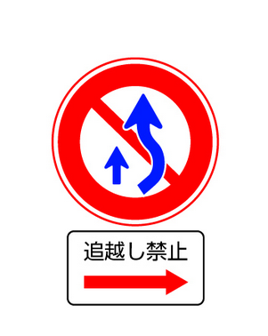

左右の見通しの悪い交差点を通行するときは徐行する。
YES
P.84
駐車禁止の場所で、人を待つため５分間運転席に座り車を停止させた。
NO
P.246
バスの停留所（運行時間中に限かぎる）の標示板から１０メートル以内の場所に車を止めると駐停車違反になる。
YES
P.248
駐車禁止の標識のある場所で、人を待つため５分間運転席に座り車を停止させた。
NO
P.246
運転者は、座席でないところに人を乗せたり、荷台や座席でないところに荷物を積つむことはできない。
YES
P.260
前の車が原動機付自転車や軽車両を追い越そうとしているときは、その車を追い越こすことができる。
YES
「自動車を車が追い越す」のが、二重追い越しの定義である。
P.119
普通自動車対応免許を受けている人で、免許証に特定後写鏡（ワイドミラー）使用の条件をつけられている人が普通自動車を運転するときは、その車の前と後の定められた位置に身体障害者標識をつけなければらならない。
NO
つけなくてはならないのは「聴覚障害者標識」である。
こう配の急な上り坂や下り坂は、追い越し禁止場所である。
NO
「こう配の急な上り坂」は追い越し可能。ダメなのは「上り坂の頂上付近」である。
P.120
中型免許の受験資格は、２０歳以上で、準中型免許、普通免許、大型特殊免許のいずれかを受けていた期間が通算して２年以上である。
YES
P.132
ブレーキペダルを踏み込んで、フワフワして柔らかい感のときは、ブレーキ液の漏れ、空気の混入のおそれがある。
YES
P.238
中型免許で大型特殊自動車を運転できる。
NO
「大型特殊免許」が必要。
P.131
 図の標識は、「高速自動車国道または自動車専用道路」であることを表している。
図の標識は、「高速自動車国道または自動車専用道路」であることを表している。
YES
P.36
昼間でも、トンネルの中や濃い霧の中などで１００メートル（高速道路では２００メートル）先が見えないような場所を通行するときは、前照灯をつけなければならない。
NO
一般道では１００メートルではなく５０メートル先が、高速道路では２００メートル先が、見えないような場合は昼間でも前照灯をつけなければなりません。
けん引するための装置と構造のある自動車で、けん引されるための装置と構造のある車両総重量７５０キログラム以下の車をけん引して運転するときは、けん引免許を受けていなければならない。
NO
総重量が７５０キログラムを超える車をけん引するときは、けん引免許が必要です。この場合は必要ありません。
P.134
大型自動二輪車と普通自動二輪車（総排気量２５０ｃｃ以下のものを除く）は、２年ごとに自動車の検査（車検）を受けなければならない。
NO
初回に限り３年になる。
事業用の大型自動二輪車と普通自動二輪車の定期点検は、３ヶ月ごとに行わなければならない。
NO
１２ヶ月（１年）ごとに行う
ＡＴ二輪車は、小回りが難しいので、安全確認を確実に行い、慎重に運転することが大切である。
YES
ホイールベース（前後輪の間隔）が長いため、ＭＴ二輪車に比べて小回がききにくいです。
P.189
 図の補助標識は、本標識が示す路線・施設・場所がある方向を示している。
図の補助標識は、本標識が示す路線・施設・場所がある方向を示している。
NO
「方向」補助標識です。
P.43
軌道敷とは道路上において「？」が通行するのに必要な部分のことである。
路面電車
大型免許を受けていれば、車の総重量が７５０キログラムを超える車をけん引できる。
NO
車の総重量が７５０ｋｇを超える車をけん引するときは、けん引免許が必要です。
P.134
バッテリーを点検するときは、液量が十分あるか、ターミナルの汚れやゆるみがないかも確認する。
YES
バッテリー液量やターミナル（バッテリー上部に付いてる蓋のような突起物）の汚れなども点検します。
P.231
乗客の乗り降りのため停留所に停止している路面電車に追いついたとき、安全地帯がある場合は徐行して通行できる。
YES
安全地帯がある場合には、乗り降りする人がいてもいなくても徐行して通行できます。また、安全地帯がなくても、乗り降りする人がいない場合で、路面電車との間に１．５メートル以上の間隔がとれるときも徐行して通行できます。
P.92
道路どうろの左側ひだりがわ部分ぶぶんの幅はばが６メートル以上いじょうある道路どうろでは、道路どうろの右側みぎがわ部分ぶぶんにはみ出だして追おい越こしをすることはできない。
YES
６メートル以上ある道路では、道路の右側部分にはみ出して追い越しすることはできません。
P.121
路面ろめんが雨あめにぬれ、タイヤがすり減へっている場合ばあいの停止ていし距離きょりは、乾燥かんそうした路面ろめんでタイヤの状態じょうたいがよい場合ばあいに比くらべて、２倍ばい程度ていどにのびることがある。
YES
P.80
大型免許の受験資格は、２１歳以上で、中型免許、準中型免許、普通免許か大型特殊免許のいずれかを受けていた期間が通算して３年以上である。
YES
大型免許の受験資格は、２１歳以上で、中型免許、準中型免許、普通免許か大型特殊免許のいずれかを受けていた機関が通算して３年以上です。
P.132
普通ふつう自動車じどうしゃ対応たいおう免許めんきょを受うけている７０歳以上さいいじょうの人ひとが普通ふつう自動車じどうしゃを運転うんてんするときは、その車くるまの前後ぜんごに高齢こうれい運転者うんてんしゃ標識ひょうしきをつけるようにする。
YES
７０歳以上の人の高齢運転者標識の表示は、運転者の努力義務（任意）となります。
P.98
 図の標識は、バスの停留所であることを表している。
図の標識は、バスの停留所であることを表している。
NO
「停止可」の標識で、車は停車することができることを表しています。
P.250
二輪車を押して歩いているときは、歩行者として扱われるが、エンジンがかかっているものや側車付のものは除のぞかれる。
YES
P.54
家の新築工事のため、材木を道路上に積んでおいた。
NO
P.13
行政上の責任とは、事故を起こした人が公安委員会から、「？」の「？」や「？」などの処分を受けることです。
「運転免許」「取り消し」「停止」
P.225
交通事故を起こすと、運転者はその内容により刑事上、民事上、行政上の責任を負うことになる。
YES
P.225
規制標識とは、特定の交通方法を禁止したり、特定の方法に従って通行するよう指定したりするものである。
YES
P.34
故障車の後輪をクレーンなどでつり上あげてけん引するときは、前輪が故障車の中心線に平行になるように、ハンドルを固定する。
YES
ここでいう前輪とハンドルとは、故障車のものであり、ハンドルの固定とは、例えばロープなどで縛り付けて固定し、前輪を真っ直ぐに保つようにする、ということである。
P.264
大型自動二輪車や普通自動二輪車で二人乗りをする場合には、安定性に優れ、後部座席にゆとりのある車種を選ぶとよい。
YES
P.193
一方通行の道路では、道路の左右どちら側に駐車してもよい。
NO
常に左側端に沿う必要がある。
P.251
標識は大きく２つの種類がある。なにとなにか。
本標識と補助標識
本標識は「きしけあ」の４種類に細分化できる
表示はどんな種類があるか
規制表示と指示表示
本標識の「きしけあ」の「きし」に対応する
霧のとき前照灯を上向きにすると霧に乱反射して、見えにくくなるので、前照灯は下向にして走行したほうがよい。
YES
P.206
車は駐車した場合、車の右側の道路上に３．５メートル以上の余地がなくなる場所では、駐車することはできない。
YES
「３．５メートル＝乗用車約２台分」と覚えておくこと
P.250
片側が転落のおそれのある谷になっている狭い道で行き違うときは、山側を通る車があらかじめ安全な場所に停止して道をゆずる。
NO
谷側（崖側）を通る車が道を譲る。
P.127
走行中にエンジンがオーバーヒートしたときは、すぐにエンジンを止めて冷却水を補給するとよい。
NO
エンジンは止めず、低速回転させてエンジンを冷却させる。
P.210
遠心力は、速度の２乗に比例して大きくなり、カーブの半径が小さいほど大きくなる。
YES
P.163
夜間、対向車のライトがまぶしいときは、視点をやや右に移すとよい。
NO
右に移すと、対向車のライトを直接目に受けてしまうことがあるので、左前方に移します。
P.199
高速自動車国道で道路の構造上往復の方向別に分離されていない本線車道での最高速度は、一般道路と同じである。
YES
P.305
車を運転中、大規模な地震が発生したとき、やむを得ず車を道路上に置いて避難するときは、道路の左側に寄せてエンジンキーを抜きとり、窓を閉め、ドアをロックしておくとよい。
NO
左側に寄せて駐車し、エンジンを止め、エンジンキーはつけたまま「ドアはロックせず」、火炎が車内に入らないよう車の「窓を閉めて」非難します。
P.214
自動車の前面ガラスに貼られた検査標章の数字は、次回の検査の時期を示すものである。
YES
「４年１月１日」という風に書かれている。
P.273
車両通行帯のない道路では、普通自動車は道路の左側部分の中央寄りを通行しなければならない。
NO
自動車や原動機自転車は道路の左側に寄って通行する。キープレフトともいう。
P.57
図の標識のあるところでは、普通自動車が原動機付き自転車を追い越すことも禁止されている。
YES
原付を追い越すのも禁止。道路の右側部分にはみ出さなくても追い越し禁止。
P.121
オートマチック車で追い越しなどをするときは、アクセルペダルを強く踏み込むと、自動的にギアが切り替わり、急加速することができる。
YES
アクセルペダルを一気にいっぱいまで踏み込むと、急加速をします。これを「キックダウン」といい、追い越しや高速道路本線に侵入するときなどに使います。
P.89
踏切内で故障した場合、発炎筒がなかったり、使い切ってしまったときは、煙の出やすい物を付近で燃やすなどして合図をする。
YES
P.74
大型自動車・中型自動車・準中型自動車・普通自動車や大型特殊自動車の荷物を積む高さ制限は、地上から３．８メートルである。
YES
３．８メートル以下である。
P.261
高速道路では、自動車は路側帯を通行できないが、大型自動二輪車や普通自動二輪車は除かれる。
NO
路側帯や路肩を通行してはいけない。ただし、故障時などで車を止めるときには入れる。
P.307, P.310
車検とは、自動車検査、つまり自動車検査登録制度の略称である。
YES
自家用の普通乗用自動車の自動車検査は、１年ごとに行なわなければならない。
NO
自家用普通乗用自動車の車検の時期は、２年ごとです。ただし、新車登録時は３年です。
P.273
 図の表示は、「立入り禁止部分」を表している。
図の表示は、「立入り禁止部分」を表している。
YES
表示内に入ることはできない。また「安全地帯」ではない。
P.59
本線車道とは、高速自動車国道の通常高速走行する部分で加速車線も含まれる。
NO
本線車道とは、通常高速走行する部分であり、加速射線・減速車線・登坂車線・路側帯・路肩を除いた部分をいう。
P.305
交差点以外の横断歩道、自転車横断帯、踏切もないところで警察官が交通整理をしているときの停止位置は、その警察官の５メートル手前である。
NO
１メートル手前で停止する。ただし、停止線がある場合 (交差点などで) は、その直前で停止する。
P.29
火災報知機から１メートル以内の場所は、駐停車禁止である。
NO
駐車禁止であり、停車は可能である。
P.249
タクシーを回送する目的で運転するときは、第一種普通免許で運転することができる。
YES
回送（旅客運送を目的としない運転）するときは、第一種普通免許で運転することができます。
P.130
路線バス等優先通行帯を通行中、通学通園バスが近づいてきたときは、進路をゆずらなくてもよい。
NO
「 路線バス等」なので、通学通園バスが近づいてきた場合でも、すみやかに出ないといけない
P.116
踏切とその前後３０メートル以内の場所は、追い越し禁止である。
NO
踏切と「その前後」ではなく、その手前から３０メートル以内の場所が、追い越し禁止である。
P.120
 図の標示がある歩道は、普通自転車が通行できる歩道であることを示している。
図の標示がある歩道は、普通自転車が通行できる歩道であることを示している。
YES
「普通自転車の歩道通行部分」の表示である。普通自転車が歩道を通行できることと、通行しなければならない部分を示している。
P.48